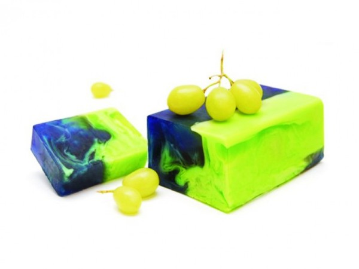

Мыло «Разноцветный виноград»

Описание
Виноград нередко называют источником молодости и красоты. И это отнюдь не случайно, ведь данный продукт богат витаминами и органическими кислотами. Стоит ли удивляться, что масло виноградной косточки является одним из самых популярных у мыловаров? Обладая тонизирующим и освежающим эффектом, оно оказывает благотворное влияние на общее состояние кожи, повышает ее упругость, предотвращает появление морщин. Сегодня мы предлагаем вашему вниманию очередной рецепт мыла с его использованием. Среди прочих достоинств предлагаемого нами косметического продукта следует отметить его привлекательный внешний вид и приятный виноградный аромат.
Состав
- Crystal Goats Milk (мыльная основа из козьего молока) – 100 грамм
- Масло виноградной косточки – 1/3 чайной ложки
- Пищевой лак-краситель Бриллиантовый синий - 2-3 капли
- Пищевой лак-краситель Тартразин (желтый) - 2-3 капли
- Пищевой ароматизатор Виноград – 4-5 капель
- Форма Шарм-Леди
Рецепт
- Растопите половину мыльной основы в микроволновой печи или на водяной бане.
- Добавьте синий краситель, половину базового масла и половину ароматизатора. Перемешайте и вылейте в форму.
- Далее действуйте очень быстро: растопите оставшуюся основу, добавьте желтый краситель, оставшееся базовое масло и ароматизатор.
- Вылейте желтую основу поверх синей. Слегка перемешайте слои деревянной палочкой, не допуская полного их смешивания.
- Оставьте мыло при комнатной температуре до полного застывания.
- Выньте его из формы.
- Ваше виноградное мыльце готово!